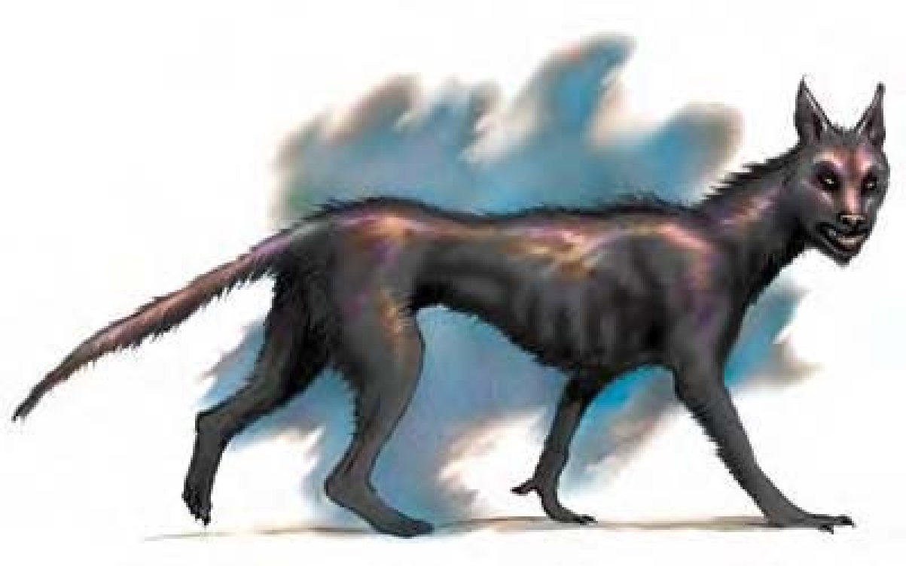

| 生命骰： | 3d8+6 (19HP) |
| 先攻： | +6 |
| 速度： | 40英尺 (8格)、飞行60英尺 (良好) |
| 防御等级： | 20 (+2敏捷、+8天生)、接触12、措手不及18 |
| 基本攻击/擒抱： | +3 / +6 |
| 攻击： | 啮咬+6近战 (1d8+4) |
| 全力攻击： | 啮咬+6近战 (1d8+4) |
| 占据/触及： | 5英尺/5英尺 |
| 特殊攻击： | 吠叫、阻绊 |
| 特殊能力： | 伤害减免10/银、黑暗视觉60英尺、飞行、灵敏嗅觉 |
| 豁免： | 强韧+5、反射+5、意志+5 |
| 属性： | 力量17、敏捷15、体质15、智力6、感知14、魅力10 |
| 技能： | 聆听+11、侦察+11、搜索+7、生存+11 (追踪+13) * |
| 专长： | 精通先攻、追踪 |
| 环境： | 黑帝斯灰色荒漠 |
| 组织： | 单独、成双或一批 (6-11) |
| 挑战级数： | 3 |
夜嘶猎犬看来像是巨大的灰猎犬，毛色暗黑，双眼散发淡红色光芒。
夜嘶猎犬会在夜空中低飞滑翔，找寻合适的猎物。夜嘶猎犬肩高5英尺，重约400磅。夜嘶猎犬不会说话，但听得懂炼狱语。
战斗夜嘶猎犬只在夜晚狩猎，因为它们非常畏惧阳光，即使有性命之忧，也不会在白天出没。
在计算伤害减免时，夜嘶猎犬的天生武器或其他持用武器都视为邪恶阵营。
吠叫Bay（Su）：当夜嘶猎犬低吼或咆哮时，除了邪恶异界生物之外，身边300英尺扩散范围内的所有生物都必须通过DC11的意志检定，否则就会陷入恐慌，持续时间2d4轮。这一能力属于音波性质的、影响心灵的恐惧效应。无论是否通过检定，受害者在24小时内对同一只夜嘶猎犬的吠叫免疫。豁免检定DC基于魅力属性。
绊摔Trip（Ex）：夜嘶猎犬通过啮咬攻击命中目标时，可以以一个自由动作尝试绊摔对手（+3检定调整值），无须进行接触攻击，也不会引发借机攻击。即使失败了，对手也不能反过来绊摔夜嘶猎犬。
飞行Flight（Su）：夜嘶猎犬可以以一个自由动作就可以停止或飞行。